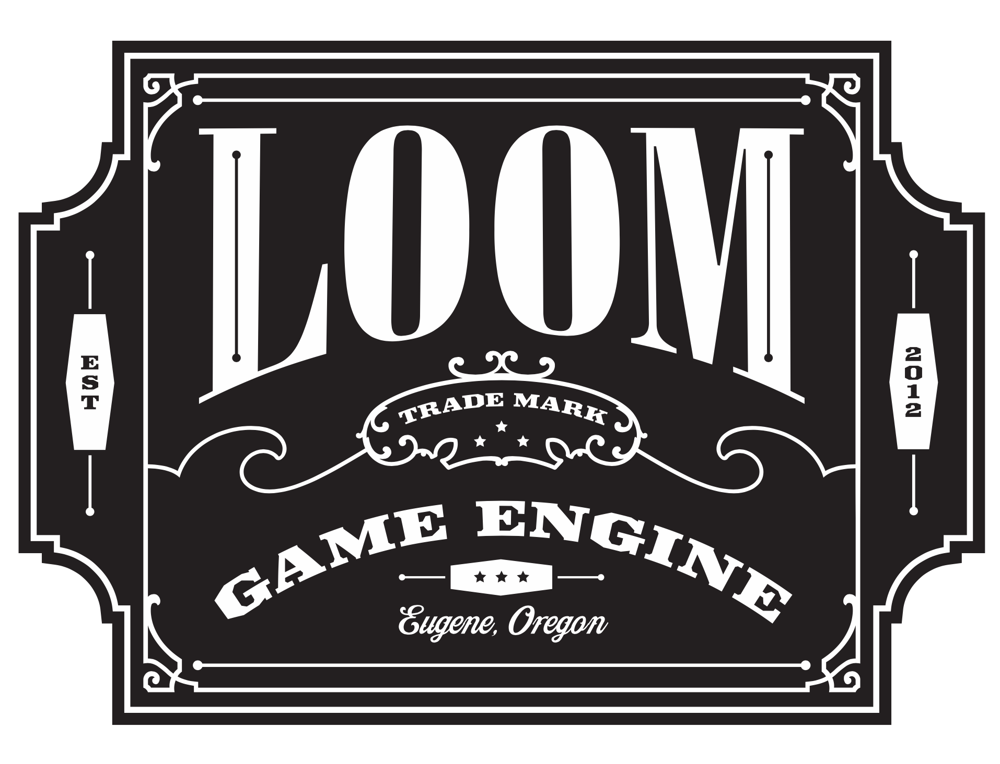

peter gerstmann | portfolio timeline
2022.07
open source | segment tilinghttps://observablehq.com/@ellemenno/segment-tiling
reconstructed a wallpaper pattern as a procedural image generator, using SVG and the Observable platform to illustrate the technical analysis.
2022.05
open source | silent dog tagscreated a procedural model for 3D printing custom dog tags, using OpenSCAD for modeling and an Ender 3 for printing.
2022
open source | rougish (work in progress)https://github.com/ellemenno/rougish
developing a roguelike game with procedurally generated levels, using Dart and revisiting ANSI terminal displays.
2021.08
open source | cover 3x3https://github.com/ellemenno/cover3x3
programmed and 3D-printed a procedural board game model, using OpenSCAD for modeling and an Ender 3 for printing.
present ← 2021
Huntington National Bank | mobile banking apphttps://www.huntington.com/Personal/mobile-banking/mobile-apps
managing teams, individual career advancement, and application release cycles. interviewing and hiring for growing agile development teams; driving improvements in developer efficiency and delivery consistency
- JD Power #1 in banking mobile app satisfaction among regional banks, 2022
- JD Power #1 in banking mobile app satisfaction among regional banks, 2021

2021
open source | vb statshttps://github.com/ellemenno/vbstats
developed a web app to record volleyball statistics, with a streamlined UX to allow real-time recording, stats review, and import/export.
2020
open source | sun clockhttps://observablehq.com/@ellemenno/sun-clock
created a real-time visualization of sun and sky, to show rise, set, twilight and noon based on a given latitude and longtitude.
2020.08
open source | periodicityhttps://observablehq.com/@ellemenno/periodicity
constructed a visual, animated, interactive exploration of signal waveforms, using the Observable platform for thinking and showing.
2020.06
open source | sharing with fibonaccihttps://observablehq.com/@ellemenno/sharing-with-fibonacci
developed a small thought experiment to explore computational thinking with the Observable platform, applying the Fibonacci sequence to start-up equity stakes.
2020.02
open source | programming pageshttps://rubygems.org/gems/programming-pages
simplified the process to deliver readable, searchable, hierarchical documentation. designed and released a Jekyll theme leveraging composable layouts and markdown for simple authoring, GitHub Pages for simple publishing.
2019.10
CAS | Formulushttps://www.cas.org/resources/press-releases/formulus-product-launch
supported successful launch of new product for CAS. helped develop cross-functional approach to staffing, ensuring team effectively owned end-to-end delivery, including development, testing, deploying, and operations. solicited feedback and feature discovery with team and solution architects to enhance shared services and operational standards that improved flexibility, reliability, and security of the product.
2019.01
CAS | patent examination efficiencyhttps://www.cas.org/resources/press-releases/cas-inpi-collaboration
ensured necessary cloud environment accounts, capacity and on-call support were available to enable the patent classification process. prioritized development of new platform services for automated account creation and setup to ensure project success.
2017.11
CAS | SciFinder-nhttps://www.cas.org/products/scifinder
supported successful launch of new flagship product for CAS. managed operations teams and developed shared services group to ensure capacity, environments, tools, and operational processes were in place and effective at scale.
2017
open source | spec-lshttps://github.com/pixeldroid/spec-ls
developed and released an opensource testing framework for LoomScript, patterned after RSpec and Jasmine.
2016.02
CAS | Methods Nowhttps://www.cas.org/products/methodsnow
supported successful launch of new cloud-based product for CAS. managed teams transitioning from bare-metal deployments to private cloud infrastructure.
2016
open source | pixel font botichttps://github.com/pixeldroid/fonts#botic
botic, digital magnetic ink for cashing checks against the future.
2016
open source | pixel font consolehttps://github.com/pixeldroid/fonts#console
console, a tiny pixel font that is small but clear, with 5 pixel uppercase and 4 pixel lowercase letters.
2016
open source | pixel font menuhttps://github.com/pixeldroid/fonts#menu
menu, a pixel font ready to report high scores, warn of grues, or tell the player to check in another castle.
2016 ← 2014
open source | code libraries for the loomscript ecosystemdeveloped and released opensource code libraries for use with LoomSDK.
- json-ls, JSON helpers for Loom, including a pretty-printer
- log-ls, a logging utility for Loom, plus a handy config reader
- loomtasks, Rake tasks for working with loomlibs
- lsdoc, an API docs generator for LoomScript
- optionparser-ls, an option parser for Loom commandline apps
- task-ls, a task processing library for loomscript
2015 ← 2013
Chase | mobile banking app for iPhonehttps://www.chase.com/digital/mobile-banking
increased delivery frequency and quality by improving efficiency and reliability of build and test systems with continuous integration and custom build status dashboards.
- #1 rated mobile banking app in 2015
- 22.8M users in 2015 [2015 annual report]
- 19.1M users in 2014 [2014 annual report]
- 15.6M users in 2013 [2013 annual report]
2014
The Engine Company | Loom Game Enginehttps://github.com/LoomSDK
contributed to development of commandline tooling and runtime libraries. improved documentation of APIs and examples.
2012
NEH | Meet the Earthworks Buildershttps://earthworksbuilder.wordpress.com/
consulted on a grant-funded project to visualize the relationship of the Newark earthworks to cycles of the moon. developed a 3D virtual environment to allow users to explore the space and positions of the moon from a first-person perspective.
2011
ACCAD, WOSU, OCEE | The Bakery Shophttp://www.thebakeryshop.org/
led implementation of a grant-funded game to immerse second graders in concepts of economics in a visually engaging way. recruited the team of student artists and developers, co-developed concept and provided technical leadership for implementation. met with second graders for feedback sessions and improvements. demoed iterations to stakeholders, and presented final deliverable.
2009.06
Resource Interactive | Steelcase: Come Togethershowcased Steelcase furniture design with an interactive microsite used at NeoCon 2009. architected and led development, working closely with the graphic and motion designers.
- CSCA Interactive Award of Merit 2009
2009
Resource Interactive | Sherwin-Williams: Color of Inspirationdeveloped a color exploration and inspiration tool for users to discover, create, and share palettes of Sherwin-Williams color. architected and led development of the interactive microsite.
- IAC outstanding interactive application 2009
2008
Resource Interactive | Sherwin-Williams: Color Visualizer Tooldeveloped an online tool to allow users to virtually paint surfaces with Sherwin-Williams color. led development of the online tool, including the imaging processes for selecting and painting on user-provided photos.
- Adobe MAX award finalist 2008
- Communication Arts webpick 2009
- IAC outstanding interactive application 2009
2006
ACCAD | 4-player arcade cabinet for video game production coursedesigned and constructed a full-size four player video game cabinet. integrated with the video game production course curriculum for student use.
2005 → 2011
ACCAD | graduate course: video game design and developmenttaught fundamentals of video game design, development, and iteration for playability. developed course curriculum and materials.
2005
open source | raycaster demo in javascripthttps://mdn.github.io/museum/canvas-raycaster/
provided an example of the new JavaScript <canvas> element to do software 3D rendering using raycasting.
submitted demo to the Mozilla Developer Network (MDN) documentation site. it lived there until June 2022, when it became the first entry in the MDN museum.
2004.04
Blue Diesel | Growth City CD-ROM for Genentechimplemented application architecture and video games for an interactive CD-ROM that introduced growth hormone therapy to children and their parents through play.

2003
Blue Diesel | photo mosaic softwaredeveloped custom imaging software to select and assemble small images to compose a larger one.
2002 → 2010
ACCAD | graduate course: programming concepts for artiststaught interactive graphics programming using ActionScript. developed course curriculum and materials for students without any prior programming background.
2002
Blue Diesel | Xigris carousel for Eli Lillydeveloped and installed custom software for trade show kiosks. implemented and set up on-site a series of interactive kiosks to assist sales staff communicate with customers at a large pharmaceutical convention.
- CSCA Creative Best Award 2002
2001
Blue Diesel | in-store kiosks for Best Buyimplemented software to run attract loop videos and allow product catalog browsing. Best Buy customers were able to self-serve learning about products via in-store kiosks.
- CSCA Creative Best Award 2001
2000
ACCAD | thesis: Building Games in VRMLdeveloped re-usable game components in VRML and VRMLScript. code released as an open source library.
1999
ACCAD | finger spelling tutorhttps://accad.osu.edu/research-gallery/fingerspelling-web-based-project
developed an interactive 3D application to teach fingerspelling. programmed hand model manipulation in VRML and JavaScript to finger spell user input.
1998 → 2005
ACCAD | graduate course: building virtual environmentstaught theory and implementation of real-time 3D virtual environments in VRML. developed additional course materials and examples.
1997
ACCAD | ViewMaster reelcreated a custom disk for View-Master 3D viewers. rendered stereo pair still images and printed to film for cut-out and assembly.
1997
ACCAD | stereo pairsmodeled and animated a 3D short, Trouble in the Tub. rendered stereo pairs for 3D viewing.
1996
GAMMA | student interest group at OSUco-authored, -designed, and -produced a zine for the computer Graphics, Animation, and Multimedia (GAMMA) student interest group. released eight issues over six months.